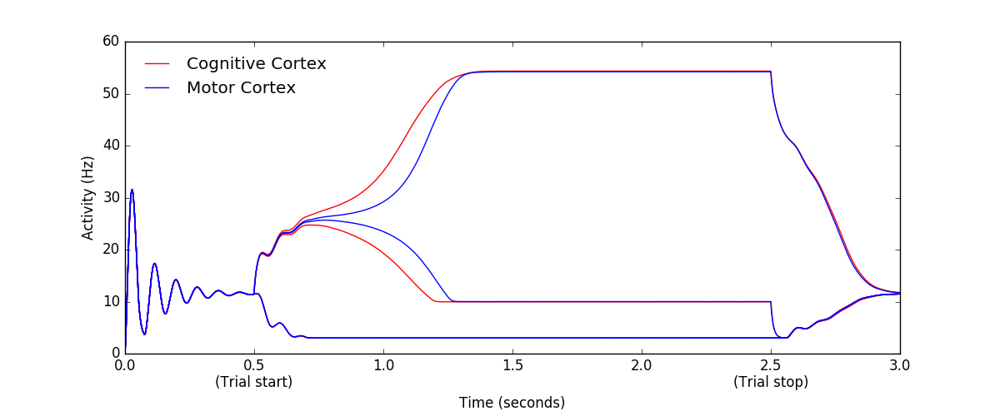

The models for the paper: Guthrie M, Leblois A, Garenne A, Boraud T (2013) Interaction between cognitive and motor cortico-basal ganglia loops during decision making: a computational study. J Neurophysiol 109:3025-40 were recreated in the paper: Topalidou M, Rougier NP (2015) [Re] Interaction between cognitive and motor cortico-basal ganglia loops during decision making: a computational study ReScience in python (see the README.md in the code folder for installation and running instructions) available at this github link: https://github.com/ReScience-Archives/ReScience-Entry-Topalidou-Rougier-2015 In the single run example the code relatively quickly (less than a minute) creates this image similar to figure 4 in Guthrie et al 2013: 